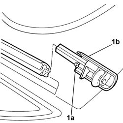
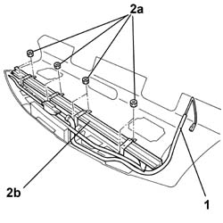

7065C27 Sun blind for electric rearscreen - R.R. with rear parcel shelf removed
- Path
- Procedures > 70 FITTINGS > 7065 SEAT BELTS AND ACCESSORIES > 7065C ACCESSORIES AND DECORATIONS > 7065C27 Sun blind for electric rearscreen - R.R. with rear parcel shelf removed
- Kind
- repair procedure (removal / refitting; the operation number is the code)
- Applies to
- all engines; all production periods
- Interactive page
- https://sloeber94.github.io/elrnDB-lThss/en/#/198984
Applies to: all engines; all production periods
 Removing
Removing
 Refitting
Refitting1. Lift it slightly, loosen the fixing bolt (1a) and remove the cap complete with rubber roller (1b).
- Carry out the same operation for the remaining cap complete with rubber roller.

Applies to: all engines; all production periods
1. Release the electrical wiring for the blind from the retaining springs and release it from the points where it is fastened to the rear parcel shelf.
2. Undo the fixing nuts (2a) and remove the electric blind (2b).

Applies to: all engines; all production periods
Refitting
Removing- Place the electric blind in position and secure it using the nuts.
- Reposition the blind electric wiring and secure it to the retaining springs.
- Fasten the blind electric wiring with some adhesive.
- Fit the caps complete with rubber rollers in place and tighten the fixing bolt.